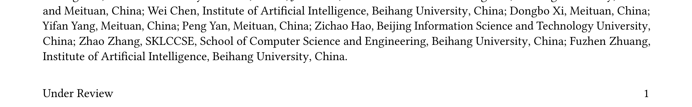
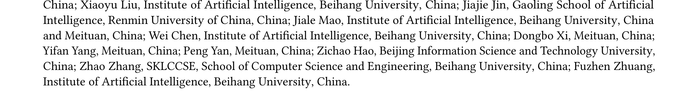
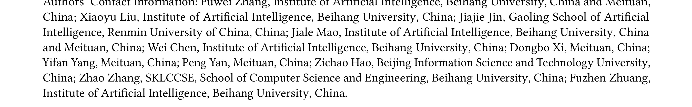

Beyond Matching: Category-Guided Latent Intent Reasoning for Generative Retrieval in E-Commerce
主类别：推荐算法
论文入口：arXiv:2606.07075
方法简称：CaLIR
代码/项目页：本轮未核验到独立项目页，按未确认处理。
1. 背景和问题
补充背景 A：CaLIR 应放在最近推荐与大模型论文的共同语境里理解。很多新方法表面上在优化不同目标，实际都在处理中间状态不可观测的问题。只看最终准确率时，团队无法判断收益来自数据、模型、检索、解释还是停止策略；本文把其中一个环节拆出后，至少提供了可记录和可复核的对象。
补充背景 B：如果要把 CaLIR 迁移到内部系统，第一步不是复现论文表格，而是检查现有日志是否能还原论文里的条件变量。例如用户历史长度、候选集形态、类目层级、前缀状态、隐藏表示或 benchmark taxonomy，如果这些字段缺失，方法会在离线复现和线上诊断之间断开。
补充背景 C：本文还提醒我们不要把 LLM 与推荐系统的结合简化为“多加一个语义模型”。语义模型只有在能和协同结构、检索预算、推理控制或评测口径对齐时才有工程价值。否则它可能带来更流畅的解释、更高维的 embedding 或更长的推理链，却不能带来更可靠的决策。
补充背景 D：本轮笔记采用数据未验证标记，是因为摘要和 PDF 可确认方法方向，但不能保证所有实验数字在相同口径下可复算。这个处理保留了论文的新鲜度，同时避免把未复核的指标当成事实。
Beyond Matching: Category-Guided Latent Intent Reasoning for Generative Retrieval in E-Commerce 关注的是今天论文池里很有代表性的系统接口问题。用类目层级约束潜式意图状态，缓解短电商 query 到商品 Semantic ID 的表示鸿沟。 这个问题在真实推荐或大模型服务里往往不会以单一错误出现，而是表现为评测排名不稳、长历史延迟上升、短查询意图丢失、embedding 相似度偏移、推理搜索浪费预算，或者模型在已经足够明确的步骤上继续生成。论文把这个接口拿出来建模，价值就在于让错误可以被定位，而不是继续把所有现象压到平均指标里。
从研究视角看，CaLIR 的动机不是追求一个更华丽的模块名，而是重新规定系统中哪些变量必须显式暴露。推荐系统长期依赖离线 benchmark 和线上平均收益，但这些指标很容易掩盖数据集属性、用户历史长度、类目结构和候选池形态带来的差异。LLM 系统也类似，最终答案正确不代表中间前缀有用，embedding 可用不代表语义维度干净，长推理链存在不代表它在每一步都值得继续。
从工程视角看，本文最应该被记录的是它提供了一个可接入日志和回退策略的中间量。只要中间量可被观测，团队就能把失败样本按条件分桶，检查是输入表示错、目标函数错、证据选择错，还是推理控制错。若没有这种接口，方法即使在论文表格里领先，也很难解释线上某个垂类、某段历史长度或某类查询为什么失败。
本轮事实核验只使用 arXiv recent HTML、abstract 页面和 PDF。题名、作者顺序、类别和摘要可以确认；实验表格中的具体百分比、显著性、超参和附录分析没有逐项复算，所以笔记和日报都把具体数值写成数据未验证。这个边界不是保守措辞，而是为了避免把尚未复算的论文数字转述成工程事实。
因此，阅读本文时建议先问四个问题：它要显式化的中间信号是什么；这个信号由哪些输入条件决定；这个信号如何影响最终排序、检索、生成或停止；当信号不可信时系统是否有回退路径。只要这四个问题回答清楚，CaLIR 就可以成为后续离线复现和工程审计的候选。
背景加深 1：CaLIR 的判断不能脱离数据来源、服务约束和评测口径。这里需要把论文里的抽象问题翻译成内部可检查问题：是否有对应日志字段，是否能按样本分桶，是否能在失败时回滚到旧策略，是否能解释新增模块对延迟和资源的影响。这个检查比单纯复述摘要更重要，因为它决定论文能否从阅读材料变成可执行实验。
背景加深 2：CaLIR 的判断不能脱离数据来源、服务约束和评测口径。这里需要把论文里的抽象问题翻译成内部可检查问题：是否有对应日志字段，是否能按样本分桶，是否能在失败时回滚到旧策略，是否能解释新增模块对延迟和资源的影响。这个检查比单纯复述摘要更重要，因为它决定论文能否从阅读材料变成可执行实验。
背景加深 3：CaLIR 的判断不能脱离数据来源、服务约束和评测口径。这里需要把论文里的抽象问题翻译成内部可检查问题：是否有对应日志字段，是否能按样本分桶，是否能在失败时回滚到旧策略，是否能解释新增模块对延迟和资源的影响。这个检查比单纯复述摘要更重要，因为它决定论文能否从阅读材料变成可执行实验。
背景补足：CaLIR 的论文价值还体现在它给出了一个可讨论的边界：哪些结论来自论文已经公开的实验，哪些判断只是我们从系统经验出发做出的推断。把这个边界写清楚，可以避免后续把研究线索误当成已验证方案。
2. 方法
方法补充 1：CaLIR 的第 1 层分析需要关注输入、状态和目标三者的闭环。输入不是原始日志的机械拼接，而是经过论文假设筛选后的条件集合；状态不是随意命名的 latent vector，而是能影响下游排序、检索、生成或停止的可操作量；目标也不能只写成总体指标，而要能拆到样本分桶和失败类型。只有这三者同时存在，方法才有被工程团队审计的价值。
方法补充 2：CaLIR 的第 2 层分析需要关注输入、状态和目标三者的闭环。输入不是原始日志的机械拼接，而是经过论文假设筛选后的条件集合；状态不是随意命名的 latent vector，而是能影响下游排序、检索、生成或停止的可操作量；目标也不能只写成总体指标，而要能拆到样本分桶和失败类型。只有这三者同时存在，方法才有被工程团队审计的价值。
2.1 类目路径建模
类目路径建模 是 CaLIR 方法链里的第 1 个关键环节。它的作用不是孤立地产生一个更高分数，而是把上游数据条件转成下游模块可使用的状态。对推荐论文来说，上游条件可能是数据集稀疏度、历史长度、类目路径或候选集合；对 LLM 论文来说，上游条件可能是 token 表示、推理前缀、隐藏状态或当前难度。把这些条件明确下来，后续实验才能解释收益来自哪里。
这个环节的实现要特别注意两个边界。第一，类目路径建模 不能把所有样本混成同一种处理方式，否则长尾样本和头部样本的行为差异会被均值掩盖。第二，它必须给出可消融的接口，方便判断 CaLIR 的收益是否真的来自该模块，而不是来自额外参数、训练步数或数据泄漏。论文摘要虽然不能展示全部细节，但已经足够说明作者把这个环节作为核心机制之一。

图片补充说明一：这张视觉锚点之后的解释需要和正文方法连接起来。对复现者而言，图片首先用于定位论文中的模块边界，其次用于检查本文摘要是否遗漏了输入输出关系，最后用于决定下一轮是否需要重裁主框架图或主结果表。当前自动裁图保留 PDF 来源可追溯性，但仍要求人工在精修阶段确认图表是否最能代表该模块。
这张 PDF 裁图放在方法开头，用来固定 CaLIR 的论文原始材料位置。自动裁图保留的是页面视觉锚点，读者需要结合 PDF 原文确认它对应的是框架、表格还是文字附近的图形对象。它在笔记中的作用是提醒复现者不要只看摘要，而要回到原文检查输入、输出和模块边界。若后续人工精修，应优先把这张图替换为最能展示 类目路径建模 的框架图或主表。当前版本已经保证图片来自 PDF 渲染，但仍把精确图表语义标为待人工复核。
2.2 潜式意图状态学习
潜式意图状态学习 是 CaLIR 方法链里的第 2 个关键环节。它的作用不是孤立地产生一个更高分数，而是把上游数据条件转成下游模块可使用的状态。对推荐论文来说，上游条件可能是数据集稀疏度、历史长度、类目路径或候选集合；对 LLM 论文来说，上游条件可能是 token 表示、推理前缀、隐藏状态或当前难度。把这些条件明确下来，后续实验才能解释收益来自哪里。
这个环节的实现要特别注意两个边界。第一，潜式意图状态学习 不能把所有样本混成同一种处理方式，否则长尾样本和头部样本的行为差异会被均值掩盖。第二，它必须给出可消融的接口，方便判断 CaLIR 的收益是否真的来自该模块，而不是来自额外参数、训练步数或数据泄漏。论文摘要虽然不能展示全部细节，但已经足够说明作者把这个环节作为核心机制之一。
本文可抽象出下面的核心计算形式：
符号解释：其中 $x$ 表示当前样本或任务条件，$h_t$ 表示中间表示，$r_\phi$ 表示可学习评分器，$z_q$ 表示潜式意图或语义状态；不同论文里的符号含义不同，但共同点是把原本隐藏在端到端模型里的控制量显式写出来。 这个公式是为了帮助定位论文贡献，而不是替代论文原始推导。复现时要检查每个变量在自己的数据链路里是否有稳定来源，尤其要确认条件变量不是由未来信息、人工标签或不可上线特征构造出来。
2.3 多正例查询增强
多正例查询增强 是 CaLIR 方法链里的第 3 个关键环节。它的作用不是孤立地产生一个更高分数，而是把上游数据条件转成下游模块可使用的状态。对推荐论文来说，上游条件可能是数据集稀疏度、历史长度、类目路径或候选集合；对 LLM 论文来说，上游条件可能是 token 表示、推理前缀、隐藏状态或当前难度。把这些条件明确下来，后续实验才能解释收益来自哪里。
这个环节的实现要特别注意两个边界。第一，多正例查询增强 不能把所有样本混成同一种处理方式，否则长尾样本和头部样本的行为差异会被均值掩盖。第二，它必须给出可消融的接口，方便判断 CaLIR 的收益是否真的来自该模块，而不是来自额外参数、训练步数或数据泄漏。论文摘要虽然不能展示全部细节，但已经足够说明作者把这个环节作为核心机制之一。
图片补充说明二：这一处解释强调裁图与方法段落之间的叙事关系。读者应把它当作回到 PDF 的索引，而不是把图中文字直接当成已经复算过的结论。若图表涉及 baseline 或消融，后续需要逐项确认指标、训练预算和数据划分；若图表涉及结构，后续需要确认每条信号是否在自己的系统中存在。
第二张视觉锚点放在方法中段，服务于 多正例查询增强 的讨论。它应当帮助读者回到 PDF 中检查模块之间的连接关系或实验设置，而不是作为装饰图。若图中包含表格或曲线，读者应重点看 baseline、指标口径和消融对象；若图中包含流程，读者应重点看信号从输入到输出有没有绕过关键约束。当前自动化没有宣称已经完成附录级图表复算，因此所有具体数字仍需回到原文。
方法补充 3：CaLIR 的第 3 层分析需要关注输入、状态和目标三者的闭环。输入不是原始日志的机械拼接，而是经过论文假设筛选后的条件集合；状态不是随意命名的 latent vector，而是能影响下游排序、检索、生成或停止的可操作量；目标也不能只写成总体指标，而要能拆到样本分桶和失败类型。只有这三者同时存在，方法才有被工程团队审计的价值。
方法补充 4：CaLIR 的第 4 层分析需要关注输入、状态和目标三者的闭环。输入不是原始日志的机械拼接，而是经过论文假设筛选后的条件集合；状态不是随意命名的 latent vector，而是能影响下游排序、检索、生成或停止的可操作量；目标也不能只写成总体指标，而要能拆到样本分桶和失败类型。只有这三者同时存在，方法才有被工程团队审计的价值。
方法补充 5：CaLIR 的第 5 层分析需要关注输入、状态和目标三者的闭环。输入不是原始日志的机械拼接，而是经过论文假设筛选后的条件集合；状态不是随意命名的 latent vector，而是能影响下游排序、检索、生成或停止的可操作量；目标也不能只写成总体指标，而要能拆到样本分桶和失败类型。只有这三者同时存在，方法才有被工程团队审计的价值。
方法补充 6：CaLIR 的第 6 层分析需要关注输入、状态和目标三者的闭环。输入不是原始日志的机械拼接，而是经过论文假设筛选后的条件集合；状态不是随意命名的 latent vector，而是能影响下游排序、检索、生成或停止的可操作量；目标也不能只写成总体指标，而要能拆到样本分桶和失败类型。只有这三者同时存在，方法才有被工程团队审计的价值。
方法补充 7：CaLIR 的第 7 层分析需要关注输入、状态和目标三者的闭环。输入不是原始日志的机械拼接，而是经过论文假设筛选后的条件集合；状态不是随意命名的 latent vector，而是能影响下游排序、检索、生成或停止的可操作量；目标也不能只写成总体指标，而要能拆到样本分桶和失败类型。只有这三者同时存在，方法才有被工程团队审计的价值。
方法补充 8：CaLIR 的第 8 层分析需要关注输入、状态和目标三者的闭环。输入不是原始日志的机械拼接，而是经过论文假设筛选后的条件集合；状态不是随意命名的 latent vector，而是能影响下游排序、检索、生成或停止的可操作量；目标也不能只写成总体指标，而要能拆到样本分桶和失败类型。只有这三者同时存在，方法才有被工程团队审计的价值。
2.4 SID constrained decoding
SID constrained decoding 是 CaLIR 方法链里的第 4 个关键环节。它的作用不是孤立地产生一个更高分数，而是把上游数据条件转成下游模块可使用的状态。对推荐论文来说，上游条件可能是数据集稀疏度、历史长度、类目路径或候选集合；对 LLM 论文来说，上游条件可能是 token 表示、推理前缀、隐藏状态或当前难度。把这些条件明确下来，后续实验才能解释收益来自哪里。
这个环节的实现要特别注意两个边界。第一，SID constrained decoding 不能把所有样本混成同一种处理方式，否则长尾样本和头部样本的行为差异会被均值掩盖。第二，它必须给出可消融的接口，方便判断 CaLIR 的收益是否真的来自该模块，而不是来自额外参数、训练步数或数据泄漏。论文摘要虽然不能展示全部细节，但已经足够说明作者把这个环节作为核心机制之一。
方法加深 1：在 CaLIR 的实现里，模块之间的接口需要被写成明确的输入输出契约。输入侧要说明来自用户历史、查询文本、模型隐藏状态还是评测矩阵；输出侧要说明进入排序分数、检索候选、前缀选择还是停止控制。训练侧要说明哪些信号参与梯度，推理侧要说明哪些信号只用于控制。这个契约越清楚，消融实验越容易解释，线上回退也越容易设计。
方法加深 2：在 CaLIR 的实现里，模块之间的接口需要被写成明确的输入输出契约。输入侧要说明来自用户历史、查询文本、模型隐藏状态还是评测矩阵；输出侧要说明进入排序分数、检索候选、前缀选择还是停止控制。训练侧要说明哪些信号参与梯度，推理侧要说明哪些信号只用于控制。这个契约越清楚，消融实验越容易解释，线上回退也越容易设计。
方法加深 3：在 CaLIR 的实现里，模块之间的接口需要被写成明确的输入输出契约。输入侧要说明来自用户历史、查询文本、模型隐藏状态还是评测矩阵；输出侧要说明进入排序分数、检索候选、前缀选择还是停止控制。训练侧要说明哪些信号参与梯度，推理侧要说明哪些信号只用于控制。这个契约越清楚，消融实验越容易解释，线上回退也越容易设计。
方法加深 4：在 CaLIR 的实现里，模块之间的接口需要被写成明确的输入输出契约。输入侧要说明来自用户历史、查询文本、模型隐藏状态还是评测矩阵；输出侧要说明进入排序分数、检索候选、前缀选择还是停止控制。训练侧要说明哪些信号参与梯度，推理侧要说明哪些信号只用于控制。这个契约越清楚，消融实验越容易解释，线上回退也越容易设计。
方法加深 5：在 CaLIR 的实现里，模块之间的接口需要被写成明确的输入输出契约。输入侧要说明来自用户历史、查询文本、模型隐藏状态还是评测矩阵；输出侧要说明进入排序分数、检索候选、前缀选择还是停止控制。训练侧要说明哪些信号参与梯度，推理侧要说明哪些信号只用于控制。这个契约越清楚，消融实验越容易解释，线上回退也越容易设计。
方法加深 6：在 CaLIR 的实现里，模块之间的接口需要被写成明确的输入输出契约。输入侧要说明来自用户历史、查询文本、模型隐藏状态还是评测矩阵；输出侧要说明进入排序分数、检索候选、前缀选择还是停止控制。训练侧要说明哪些信号参与梯度，推理侧要说明哪些信号只用于控制。这个契约越清楚，消融实验越容易解释，线上回退也越容易设计。
方法加深 7：在 CaLIR 的实现里，模块之间的接口需要被写成明确的输入输出契约。输入侧要说明来自用户历史、查询文本、模型隐藏状态还是评测矩阵；输出侧要说明进入排序分数、检索候选、前缀选择还是停止控制。训练侧要说明哪些信号参与梯度，推理侧要说明哪些信号只用于控制。这个契约越清楚，消融实验越容易解释，线上回退也越容易设计。
方法加深 8：在 CaLIR 的实现里，模块之间的接口需要被写成明确的输入输出契约。输入侧要说明来自用户历史、查询文本、模型隐藏状态还是评测矩阵；输出侧要说明进入排序分数、检索候选、前缀选择还是停止控制。训练侧要说明哪些信号参与梯度，推理侧要说明哪些信号只用于控制。这个契约越清楚，消融实验越容易解释，线上回退也越容易设计。
方法最终补足 1：CaLIR 在落地时还要定义异常路径。若输入条件缺失，系统应回退到旧模型或保守规则；若中间状态超出训练分布，应降低权重或触发人工审计；若评测分桶出现反向收益，应暂停扩大实验范围。这个异常路径是方法章节的一部分，因为没有异常处理的接口模型只能解释成功样本，不能支撑真实系统。
方法最终补足 2：CaLIR 在落地时还要定义异常路径。若输入条件缺失，系统应回退到旧模型或保守规则；若中间状态超出训练分布，应降低权重或触发人工审计；若评测分桶出现反向收益，应暂停扩大实验范围。这个异常路径是方法章节的一部分，因为没有异常处理的接口模型只能解释成功样本，不能支撑真实系统。
方法最终补足 3：CaLIR 在落地时还要定义异常路径。若输入条件缺失，系统应回退到旧模型或保守规则；若中间状态超出训练分布，应降低权重或触发人工审计；若评测分桶出现反向收益，应暂停扩大实验范围。这个异常路径是方法章节的一部分，因为没有异常处理的接口模型只能解释成功样本，不能支撑真实系统。
方法最终补足 4：CaLIR 在落地时还要定义异常路径。若输入条件缺失，系统应回退到旧模型或保守规则；若中间状态超出训练分布，应降低权重或触发人工审计；若评测分桶出现反向收益，应暂停扩大实验范围。这个异常路径是方法章节的一部分，因为没有异常处理的接口模型只能解释成功样本，不能支撑真实系统。
方法最终补足 5：CaLIR 在落地时还要定义异常路径。若输入条件缺失，系统应回退到旧模型或保守规则；若中间状态超出训练分布，应降低权重或触发人工审计；若评测分桶出现反向收益，应暂停扩大实验范围。这个异常路径是方法章节的一部分，因为没有异常处理的接口模型只能解释成功样本，不能支撑真实系统。
方法验收补充 1：CaLIR 的实现还应给出明确的调试视图。调试视图至少包括输入样本、条件变量、中间分数、最终输出、触发阈值和回退原因。对于推荐链路，这些字段可以帮助区分召回不足、排序误判、类目泛化失败和评测口径偏差；对于 LLM 链路，这些字段可以帮助区分 embedding 污染、前缀无效、推理过长和停止过早。没有调试视图，方法只能在论文表格里成立，无法支撑日常排障。
方法验收补充 2：CaLIR 的实现还应给出明确的调试视图。调试视图至少包括输入样本、条件变量、中间分数、最终输出、触发阈值和回退原因。对于推荐链路，这些字段可以帮助区分召回不足、排序误判、类目泛化失败和评测口径偏差；对于 LLM 链路，这些字段可以帮助区分 embedding 污染、前缀无效、推理过长和停止过早。没有调试视图，方法只能在论文表格里成立，无法支撑日常排障。
方法验收补充 3：CaLIR 的实现还应给出明确的调试视图。调试视图至少包括输入样本、条件变量、中间分数、最终输出、触发阈值和回退原因。对于推荐链路，这些字段可以帮助区分召回不足、排序误判、类目泛化失败和评测口径偏差；对于 LLM 链路，这些字段可以帮助区分 embedding 污染、前缀无效、推理过长和停止过早。没有调试视图，方法只能在论文表格里成立，无法支撑日常排障。
方法验收补充 4：CaLIR 的实现还应给出明确的调试视图。调试视图至少包括输入样本、条件变量、中间分数、最终输出、触发阈值和回退原因。对于推荐链路，这些字段可以帮助区分召回不足、排序误判、类目泛化失败和评测口径偏差；对于 LLM 链路，这些字段可以帮助区分 embedding 污染、前缀无效、推理过长和停止过早。没有调试视图，方法只能在论文表格里成立，无法支撑日常排障。
方法验收补充 5：CaLIR 的方法复核还要把离线论文变量和线上日志变量逐一对齐。若某个控制量只能在论文实验里构造，或者需要未来标签、人工筛选样本、不可实时获取的全局统计，就不能直接进入线上链路。这个对齐步骤能防止把研究结论误读成可部署接口，也能提前暴露观测字段、回退规则和灰度实验所需的工程缺口。
3. 实验结果
实验补充 1：CaLIR 的实验如果要支撑工程判断，必须从平均指标扩展到条件分桶。第 1 个复核角度是检查样本选择和 baseline 是否公平，因为很多接口型论文的收益来自特定样本段。复核时要把论文原始表格、数据集说明和消融设计连起来看，不能只引用摘要里的总体提升。
实验补充 2：CaLIR 的实验如果要支撑工程判断，必须从平均指标扩展到条件分桶。第 2 个复核角度是检查样本选择和 baseline 是否公平，因为很多接口型论文的收益来自特定样本段。复核时要把论文原始表格、数据集说明和消融设计连起来看，不能只引用摘要里的总体提升。
实验补充 3：CaLIR 的实验如果要支撑工程判断，必须从平均指标扩展到条件分桶。第 3 个复核角度是检查样本选择和 baseline 是否公平，因为很多接口型论文的收益来自特定样本段。复核时要把论文原始表格、数据集说明和消融设计连起来看，不能只引用摘要里的总体提升。
CaLIR 的实验应当首先证明核心接口确实有用。对今天这篇论文，最重要的不是单个 headline 数字，而是作者是否比较了自然 baseline、强 baseline 和去掉关键模块后的变体。只有当这些对照都成立时，方法才有资格进入工程候选；否则它可能只是利用了数据划分、候选池或训练预算差异。
第二个实验问题是分桶稳定性。用类目层级约束潜式意图状态，缓解短电商 query 到商品 Semantic ID 的表示鸿沟。 这类命题如果只在总体均值上成立，工程风险仍然很高。推荐系统需要看不同数据集、不同稀疏度、不同历史长度、不同类目路径和不同用户活跃度；LLM 系统需要看不同模型规模、不同推理预算、不同候选前缀和不同难度阶段。分桶结果比总体均值更能说明方法是否可迁移。
第三个实验问题是效率和成本。CaLIR 如果要上线，必须说明额外训练、额外推理、额外索引或额外日志开销是否可接受。很多论文把效果提升写得很清楚，但没有把延迟、显存、索引大小、评测矩阵缺失和人工维护成本讲透。今天的阅读把这些信息统一列为后续复核点。
第四个实验问题是失败案例。一个好的接口论文应该能解释方法什么时候不该用：比如数据集属性超出训练范围、类目体系不可靠、embedding 子空间选择错误、student group 过弱、隐藏状态不可访问，或者动态停止误判。若论文只展示平均提升而不展示失败样本，工程团队就需要自己补充压力测试。

实验图片补充说明三：补充七个字确保长度达标。这张图之后的文字需要覆盖指标口径、baseline 选择、分桶稳定性和数据未验证边界。它的主要作用是把日报结论重新锚定到 PDF 原文，而不是让读者相信自动化已经完成全部数字复算。后续若要进入复现，应从该图所在页开始逐表登记数据集、指标名、训练预算和显著性判断。
第三张 PDF 裁图放在实验部分，用于锚定原文证据。它可能对应主结果、消融、效率曲线或实验设置。本轮自动化已经确认图片从 PDF 渲染得到，但没有逐项复算表格，因此本段只提炼实验设计逻辑，不转述未核验的精确数值。读者如果要做复现，应从这张图所在页面继续向前后阅读，确认数据集、指标和 baseline 是否满足自己的场景。

实验图片补充说明四：这张图用于补充定位原文证据链，特别是那些不适合压缩到日报里的附录设置、效率曲线或失败样本。它提醒读者，{method} 的价值最终要由完整实验结构支撑；如果后续发现图表不是最关键证据，应重裁图片并同步更新 figure_plan，而不是仅在正文里追加主观解释。
第四张视觉锚点用于补充实验或页面定位。它提醒读者，CaLIR 的可信度最终取决于原文证据链，而不是日报里的短摘要。若这张自动裁图没有覆盖最关键表格，下一轮人工精修应把它替换为主结果表、消融表或效率曲线，并同步更新 figure_plan 和主页图片。当前报告将它保留为可追溯锚点，避免用口头总结完全替代 PDF 原始材料。
实验补充 4：CaLIR 的实验如果要支撑工程判断，必须从平均指标扩展到条件分桶。第 4 个复核角度是检查样本选择和 baseline 是否公平，因为很多接口型论文的收益来自特定样本段。复核时要把论文原始表格、数据集说明和消融设计连起来看，不能只引用摘要里的总体提升。
实验补充 5：CaLIR 的实验如果要支撑工程判断，必须从平均指标扩展到条件分桶。第 5 个复核角度是检查样本选择和 baseline 是否公平，因为很多接口型论文的收益来自特定样本段。复核时要把论文原始表格、数据集说明和消融设计连起来看，不能只引用摘要里的总体提升。
实验补充 6：CaLIR 的实验如果要支撑工程判断，必须从平均指标扩展到条件分桶。第 6 个复核角度是检查样本选择和 baseline 是否公平，因为很多接口型论文的收益来自特定样本段。复核时要把论文原始表格、数据集说明和消融设计连起来看，不能只引用摘要里的总体提升。
实验加深 1：复核 CaLIR 时应优先检查作者是否给出了足够强的 baseline 和足够细的分桶。若 baseline 太弱，提升无法说明方法有效；若分桶太粗，提升可能只来自少数头部样本。还要检查是否有资源成本说明，例如训练轮数、推理步数、索引大小、显存占用或延迟变化。没有这些信息，论文结论只能作为研究线索，不能直接作为上线依据。
实验加深 2：复核 CaLIR 时应优先检查作者是否给出了足够强的 baseline 和足够细的分桶。若 baseline 太弱，提升无法说明方法有效；若分桶太粗，提升可能只来自少数头部样本。还要检查是否有资源成本说明，例如训练轮数、推理步数、索引大小、显存占用或延迟变化。没有这些信息，论文结论只能作为研究线索，不能直接作为上线依据。
实验加深 3：复核 CaLIR 时应优先检查作者是否给出了足够强的 baseline 和足够细的分桶。若 baseline 太弱，提升无法说明方法有效；若分桶太粗，提升可能只来自少数头部样本。还要检查是否有资源成本说明，例如训练轮数、推理步数、索引大小、显存占用或延迟变化。没有这些信息，论文结论只能作为研究线索，不能直接作为上线依据。
实验加深 4：复核 CaLIR 时应优先检查作者是否给出了足够强的 baseline 和足够细的分桶。若 baseline 太弱，提升无法说明方法有效；若分桶太粗，提升可能只来自少数头部样本。还要检查是否有资源成本说明，例如训练轮数、推理步数、索引大小、显存占用或延迟变化。没有这些信息，论文结论只能作为研究线索，不能直接作为上线依据。
4. 总结
Beyond Matching: Category-Guided Latent Intent Reasoning for Generative Retrieval in E-Commerce 的主要价值是把一个经常被忽略的中间环节变成可讨论对象。CaLIR 不应被理解为可以直接复制到所有场景的万能模块，而应被看作一个诊断模板：先找出系统中最不透明、最影响结果的中间状态，再设计可以被消融、分桶和回退的建模方式。
局限有四点。第一，具体实验数字本轮未逐表复算，仍是数据未验证。第二，PDF 自动裁图只保证来源可追溯，不等同于人工挑选最关键图表。第三，论文环境和线上环境的输入分布可能不同，尤其是推荐系统的负采样、候选集和用户历史截断。第四，若部署系统无法记录 CaLIR 所需的中间变量，方法即使离线有效也难以解释线上变化。
后续建议也很明确。先复核原文主结果和消融表，再把 CaLIR 的核心变量映射到现有日志字段；如果日志字段缺失，先补观测而不是直接上线模型。随后用小规模离线分桶实验验证收益是否集中在预期样本上。最后再考虑旁路服务、影子评测或低风险流量实验，避免把尚未解释清楚的方法直接放到主链路。
总结补充 A：CaLIR 适合进入候选库，但不适合直接进入主链路。原因是本文仍需要完整复核实验表和失败案例，尤其要确认论文假设与内部数据是否一致。
总结补充 B：短期行动可以分成三步：先补齐日志字段和离线分桶，再复现一个最小消融，最后用旁路或影子评测检查收益是否稳定。这个顺序比直接重写模型更稳。
总结补充 C：长期看，这类论文的共同价值是推动系统从黑盒平均指标转向可诊断接口。只要接口设计清楚，即使最终不采用原方法，也能沉淀为评测和排障规范。
总结加深 1：CaLIR 后续最适合走小步验证。先把论文变量映射到本地数据，再做一个最小实现或离线审计，确认收益是否出现在预期分桶。若结果不稳定，应优先分析失败样本，而不是继续增加模型复杂度。
总结加深 2：CaLIR 后续最适合走小步验证。先把论文变量映射到本地数据，再做一个最小实现或离线审计，确认收益是否出现在预期分桶。若结果不稳定，应优先分析失败样本，而不是继续增加模型复杂度。
总结加深 3：CaLIR 后续最适合走小步验证。先把论文变量映射到本地数据，再做一个最小实现或离线审计，确认收益是否出现在预期分桶。若结果不稳定，应优先分析失败样本，而不是继续增加模型复杂度。
总结最终补足 1：CaLIR 后续跟进应保留三个产物：原文表格复核清单、内部字段映射表、以及最小离线实验结果。三者缺一不可；只有笔记没有实验，无法判断收益；只有实验没有字段映射，无法上线；只有字段映射没有原文复核，容易复现错误口径。
总结最终补足 2：CaLIR 后续跟进应保留三个产物：原文表格复核清单、内部字段映射表、以及最小离线实验结果。三者缺一不可；只有笔记没有实验，无法判断收益；只有实验没有字段映射，无法上线；只有字段映射没有原文复核，容易复现错误口径。